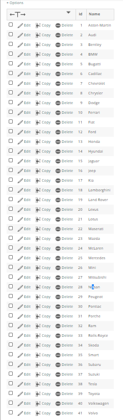
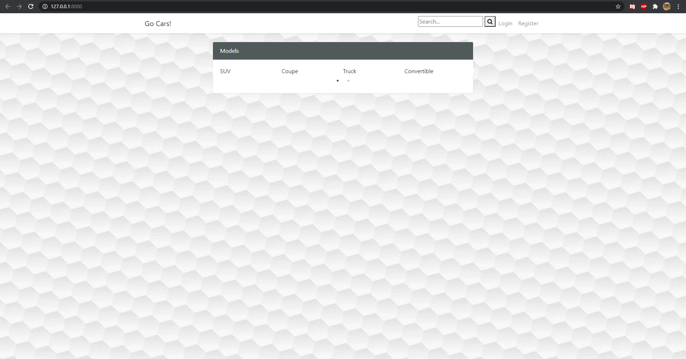
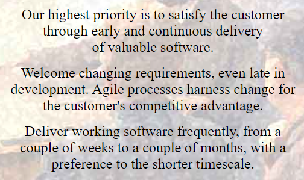

Sprint 4.
14/09/2020
8am – 10am
Sprint 4, I'm leader This sprint the goal is to get the database properly connected to the site, I need to properly implement CRUD to the cars database and be able to get data from the other databases.
Taylor and Anthony need to create pages to display the outputted data.
17/09/2020
8am – 10am
Today I managed to link the project and the databases correctly, I was able to output the car, model and make of the manually added entry, Next I want to be able to add and display more items.
18/09/2020
Out of class time
I finished the CRUD for the cars table so that next week we would be able to add more models to display on the pages that Ant and Taylor made.


21/08/2020
8am – 10am
I added many makes of cars and the main type of cars, I'm going to add the option to add more makes in case that someone wants to add a car that isnt there.

24/08/2020
8am – 10am
All the pages linked correctly, data is being displayed. We need to remove links from the old site that are no longer needed, we need to display the pages better like the forms to add a car or edit the car.


Weekend work
Deleted any unnecessary routes / code from the old site.
Overall individual sprint reflection
What did I do well? - Posting to the database and getting data from the database using CRUD.
What could I do better? - add more options to the cars, such as kilometers, seats, doors etc.
What did I learn? - I learnt how to correctly implement CRUD using a resource controller in laravel.
What do I still need to learn? - I need to learn how to display the data effectively.
What the group achieved.
As a group we managed to add data to a database properly using CRUD and a resource controller, Taylor and Ant made basic pages to start displaying data in a practical way.
I feel that as a group we are doing less and less each sprint and I'm struggling to work out where we can improve and get motivation back up.
Agile Principles.
The main principles of this sprint were the first, second and third, We wanted to get working software that was up to a clients standards at a level that I felt that I could deliver working with an efficient code structure within the controller.

As a group I think we need to look at the 5th principle and get motivated together.